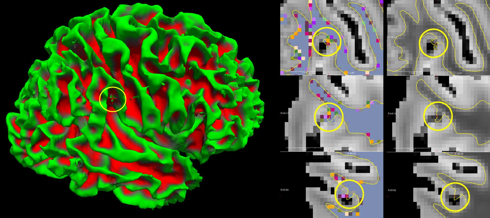
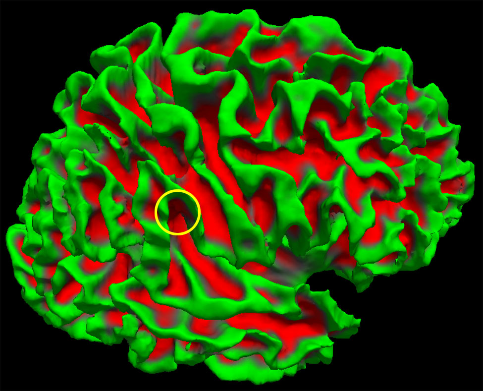

Surface reconstruction from exvivo MRI¶
This document describes the steps required to reconstruct the cortical surface from a multi-flash multi-echo acquisition (MGH protocol).
STEP 0 : edit and run the 00_params.csh script¶
This file defines the paths used by all subsequent scripts.
It is located in in the _scripts_templates/ directory
Edit the script with the following information¶
- ** Path to the directory containing the DICOM series ($dicom_dir)**
This directory typically contains 2 series per flip angle (FA) (MEFLASH_FA10_0002 and MEFLASH_FA10_0003 for amplitude and phase, respectively).
Each FA series contains one volume per echo, typically 10 echos. - Path to the directory containing reconstructions for all subjects ($root_recon_dir/)
- Subjects's name ($subj), for instance FIBRATLAS_XX-XXX_EXV
-
List of echo times (TE) ($telist)
Open one of the flip angle series in Horos (e.g., MEFLASH_FA10_0002);
This displays 10 volumes, one per echo time.
For each volume search for the EchoTime value in metadata.In Tours, this is usually : (2.64 4.50 6.36 8.22 10.08 11.94 13.80 15.66 17.52 19.38).
-
Flip Angle values defined by two variables, ($falist_ref1 and $falist_ref2)
This allows recombination of images acquired in two sessions:- $falist_ref1: FA values for the first session
- $falist_ref2: FA values for the second session
f only one session was performed, comment out $falist_ref2
Typical FA values are: 10 20 30 40 50.
- $falist_ref1: FA values for the first session
Run the script¶
cd _scripts_template
./00_params.csh
The script creates the following directories if they do not already exist:
$root_recon_dir/
├── mri/ : raw data in mgz format, original orientation
├── rotated/ : data rotated to standard orientation
│ ├── vol2vol/ : rotated raw data (.mgz)
│ ├── split/ : individual TE volumes, rotated
│ └── parameter_maps/ : T1, T2*, PD maps, rotated
└── scripts/ : reconstruction scripts (automatically copied here)
STEP 1 : convert DICOM files to mgz format.¶
Make sure you are in the < subject >/script/ directory before running :
./01_convert_MEFLASH_dicom_toMGZ.tcsh
This script converts the original DICOM to .mgz format, and stores the results in the mri/ directory:
- One .mgz file is created per FA,
- Each .mgz file contains the 10 echos.
The script looks for a file matching the pattern: .????.0001..IMA
For example, MEFLASH_FA10_0002/FIBRATLAS_01-14.MR.PROTOCOLES_INSTITUTIONNELS_FIBRATLAS.0002.0001.2021.02.09.15.46.09.318041.70332665.IMA Where:
- * corresponds to MEFLASH_FA10_0002/FIBRATLAS_01-14.MR.PROTOCOLES_INSTITUTIONNELS_FIBRATLAS
- ???? corresponds to 0002 (series #2)
- *.IMA corresponds to .2021.02.09.15.46.09.318041.70332665.IMA
STEP 2: Rotate volumes and split echoes¶
Rotate one volume¶
- Before running the script, open one volume from < subject >/mri/ in Freeview
- Select the first volume of a given flip angle (amplitude) as the second contains phase information.
Example:
cd < subject >/mri/
freeview MEFLASH_FA30_00??.mgz $FREESURFER_HOME/average/mni305.cor.mgz:colormap=heat:opacity=0.5
Ensure that the selected volume is the acquisition to rotate, not the atlas!
-
In Freeview, use Tools > Transform volume to adjust orientation (rotation only: no scaling or translation):
- Usually about 80° for X, no rotation for Y, 180° for Z
- Beware the Right-Left orientation: In axial view, the letters shown at the bottom of the view should appear on the left side of the image and appear flipped.
- Save the volumes in mri/ as rotation_template.mgz* (this name can be changed in 00_params.csh)
- This produces the reoriented volume (rotation_template.mgz) and the related transformation (rotation_template.mgz.lta)

Run the script¶
cd <subject>/scripts/
02_rotate_split.csh
- Creates a rotated file per FA in mri/rotated/vol2vol/ aligned to rotation_template.mgz,
Uses only the amplitude images (phase is ignored)
- Splits each rotated FA volume into 10 echo volumes in rotated/split/,
for instance MEFLASH_FA10_0002.rot0000.mgz to MEFLASH_FA10_0002.rot0009.mgz.
- FAssigns the correct TE value to each echo.
- Compute flash 10-50, PD, T1, SSE, T2 maps usin Bloch's equations. Results are saved in rotated/parameter_maps/.
STEP 3 : Create and apply masks¶
Determine threshold values¶
cd <subject>/rotated/parameter_maps/
freeview PD.mgz T1.mgz T2star.mgz
- In Freeview, use Tools > Threshold volume to determine:
- PDThresh : minimum value in PD.mgz to include brain and fluid while excluding air and the container,
Produces PD.th.ocn.mgz by keeping only voxels above PDThresh (brain and fluid) and belonging to a cluster > 4000 voxels
- T2sThresh: maximum value in T2star.mgz for voxels belonging to brain air
Produces T2s.th.ocn.mgz by keeping only voxels below T2sThresh (brain and air) and belonging to a cluster > 4000 voxels
- T1Thresh : minimum value in T1.mgz for voxels belonging to fluid
- PDThresh : minimum value in PD.mgz to include brain and fluid while excluding air and the container,
| In | Out | Filename | |
|---|---|---|---|
| i > PDThresh | Brain + Fluid | Air + Box | PD.th.ocn.mgz |
| i < T2sThresh | Brain + Air | Fluid | T2s.th.ocn.mgz |
| i > T1Thresh | Fluid | Brain + Air | T2s.th.ocn.mgz |
Edit these values into 03_create_masks.csh
Run the script¶
cd <subject>/scripts/
03_create_masks.csh
Check the output¶
cd <subject>/rotated/parameter_maps
freeview PD.mgz brainmask.bb.mgz:colormap=heat:opacity=0.3 PD.bb.maskedn.conf+noise.gstd1abs.mgz:colormap=jet:opacity=0.3
- Verify that brainmask.bb.mgz and PD.bb.maskedn.conf+noise.gstd1abs.mgz contain the whole brain and only brain voxels.
If not, adjust the thresholds and rerun the script, you may run individual commands to to fine-tune values.
cd <subject>/rotated/parameter_maps/
freeview PD.mgz PD.th.ocn.mgz:colormap=lut:opacity=0.3 T2s.th.ocn.mgz:colormap=lut:opacity=0.3 fluid.mgz:colormap=heat:opacity=0.3
- Normally you expect the voxels value for the different masks created during the process to follow this table:
| Air | Box | Brain | Fluid | |
|---|---|---|---|---|
| PD.th.ocn.mgz | 0 | 0 | 1 | 1 |
| fluid.mgz. | 0 | 0 | 0 | 1 |
| T2s.th.ocn.mgz | 1 | 0/1 | 1 | 0 |
cd <subject>/rotated/parameter_maps
freeview PD.mgz fluid.not.mgz:colormap=heat:opacity=0.3 PD.th.ocn.mgz:colormap=jet:opacity=0.3 T2s.th.ocn.mgz:colormap=pet:opacity=0.3
STEP 4: Run samseg¶
Run the script¶
cd <subject>/scripts
./04_runsamseg.csh
samseg segments the brain in large compartments and computes an unbiased version of the PD image.
The script calls :
samseg --i PD.bb.maskedn.conf+noise.gstd1abs.mgz \
--exvivo \
--o samseg.PD.bb.maskedn.conf+noise.gstd1abs \
--save-posteriors \
--save-probabilities \
--threads 4
With :
--i[nput], i.e. the masked PD volume
--o[utput] samseg.PD.bb.maskedn : output directory, which contains
seg.mgz : anatomical label assigned to each voxel
samseg.stats : estimated volume of each class (mm^3)
mode0X_bias_corrected.mgz (with X=1,2,...): the bias field corrected MRI volume corresponding for each input contrast. Since we only input PD, mode01_bias_corrected.mgz is the bias corrected PD
mode0X_bias_field.mgz (with X=1,2,...): estimated bias field for each input contrast
--threads 4 : number of CPU cores to use
--save-posteriors : saves posterior probability maps
--save-probabilities : aves posterior, prior, and likelihood maps as 3-frame volumes for each tissue type
--gmm exvivo.NoCblum.sharedGMMParameters.txt: groups segmented structures into superstructures (WM, GM, etc.). By default it uses $FREESURFER_HOME//average/samseg/20Subjects_smoothing2_down2_smoothingForAffine2. You can specify another file to change the superstructures definition.
Check the result¶
cd <subject>/rotated/parameter_maps/samseg.PD.bb.maskedn.conf+noise.gstd1abs
freeview mode01_bias_corrected.mgz seg.mgz:colormap=lut:opacity=0.4
Check whether the gray/white matter segmentation is correct.
If the segmentation is not satisfactory
Option 1: Run SAMSEG without added noise Use PD.bb.maskedn.conf.mgz (output of step 3 without noise)
in 04_runsamseg.csh, modify the samseg command to:
samseg --i PD.bb.maskedn.conf.mgz \
--exvivo \
--o samseg.PD.bb.maskedn.conf.gstd1abs \
--save-posteriors \
--save-probabilities \
--threads 4
in 05_runmmppsp.csh, modify the command input and output as follow:
csh ../../scripts/mmppsp.txt
--samseg samseg.PD.bb.maskedn.conf.gstd1abs \
--posterior \
--o samseg.PD.bb.maskedn.conf.gstd1abs/${subj}.recon \
--threads 4
2/ rerun the end of step 3, keeping the image's original dynamics.
cd <subject>/rotated/parameter_maps/
mri_convert PD.bb.maskedn.mgz --conform \
--no_scale 1 \
-odt float PD.bb.maskedn.conf.mgz
mri_binarize --min .0001 \
--i PD.bb.maskedn.conf.mgz \
--o PD.bb.maskedn.conf.mask.inv.mgz \
--inv <br />mri_volsynth \
--template PD.bb.maskedn.conf.mgz \
--gstd 1 \
--o noise.gstd1abs.mgz \
--abs
fscalc noise.gstd1abs.mgz \
mul PD.bb.maskedn.conf.mask.inv.mgz \
sum PD.bb.maskedn.conf.mgz \
-o PD.bb.maskedn.conf+noise.gstd1abs.mgz
STEP 5: run mmppsp¶
Run the script¶
cd <subject>/scripts
./05_runmmppsp.csh
-
This step is similar to an in vivo recon-all; it creates various mri, surf, and labels files for the subject and stores them in: samseg.PD.bb.maskedn.conf+noise.gstd1abs/${subj}.recon
-
It runs :
With :csh ../../scripts/mmppsp.txt --samseg samseg.PD.bb.maskedn.conf+noise.gstd1abs \ --posterior \ --o samseg.PD.bb.maskedn.conf+noise.gstd1abs/FIBRATLAS_01-014_EXV.recon \ --threads 4
--samseg samseg.PD.bb.maskedn.conf+noise.gstd1abs : directory where the samseg output is located --posterior uses posterior from samseg --o samseg.PD.bb.maskedn.conf+noise.gstd1abs/${subj}.recon : output directory --threads 4 : number of processor to use in parallel
Check the output¶
cd <subject>/rotated/parameter_maps/samseg.PD.bb.maskedn.conf+noise.gstd1abs/${subj}.recon
freeview mri/norm.mgz mri/wm.mgz:colormap=lut \
--hide-3d-slices \
--layout 4 \
--viewport 3d \
-f surf/*h.white \
-f surf/*h.inflated
-
Check that the gray–white matter interface is correct. White matter is often missing in frontobasal and temporobasal regions.
-
Inspect the rh.white and lh.white surface for small bumps and play with the wm.mgz transparency. These are usually caused by air bubbles; their periphery often has signal intensity similar to white matter and may be incorrectly included.

Use the recon tool to fill the air bubble with value 1.
Do not use 0, otherwise the edits will be lost when rerunning mmppsp.

Run the script again¶
cd <subject>/scripts
./05_runmmppsp.csh
